Berlijn
De indeling van Berlijn voor 2001
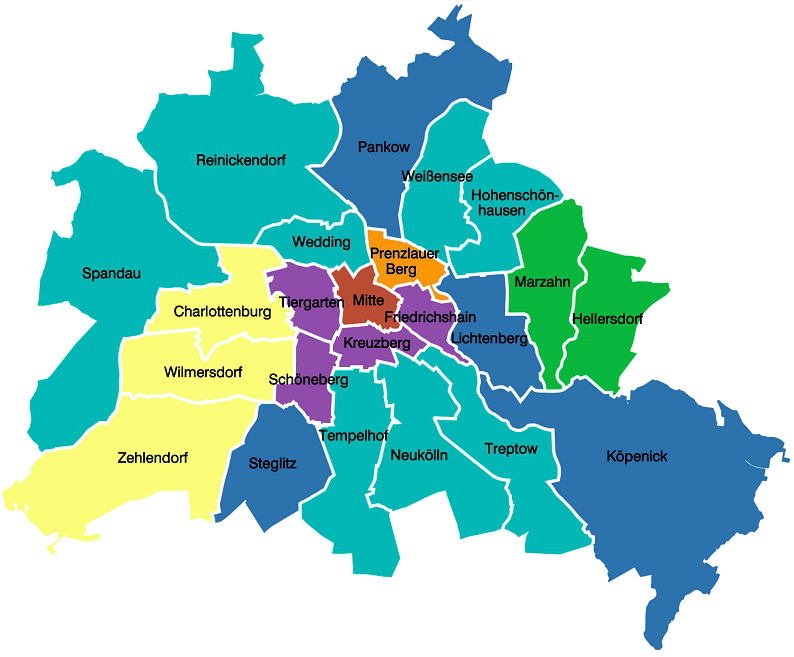
Een mooie blog over Berlijn: Berlijn-blog
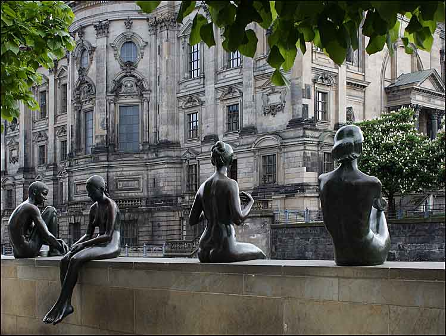
"Drei Mädchen und ein Knabe" bij de Spree in Mitte. De maker is Wilfried Fitzenreiter (1932-2008) een bekende duitse beeldhouwer en "Medailleur"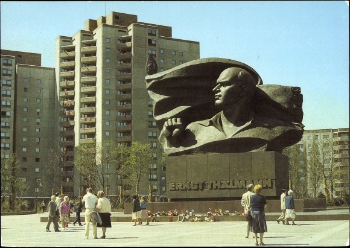
Ernst-Thälmann-Park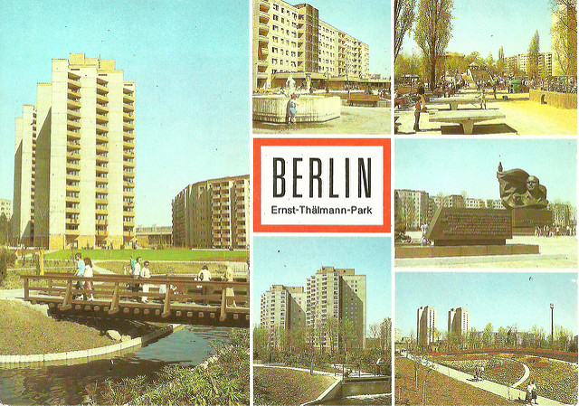
Ernst-Thälmann-Park Ansichtkarte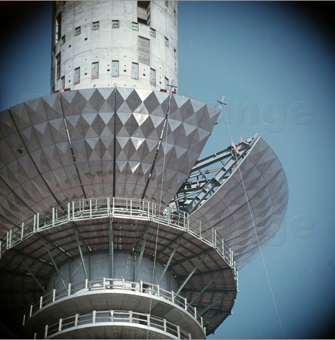
bouw van de Fernsehturm, tussen 1965 en 1969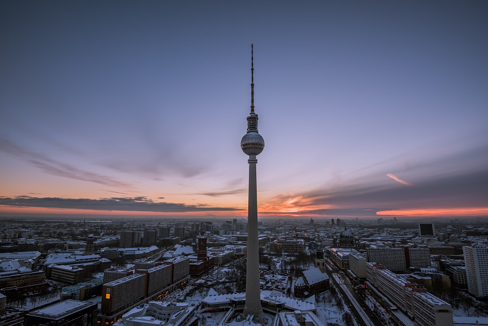
Fernsehturm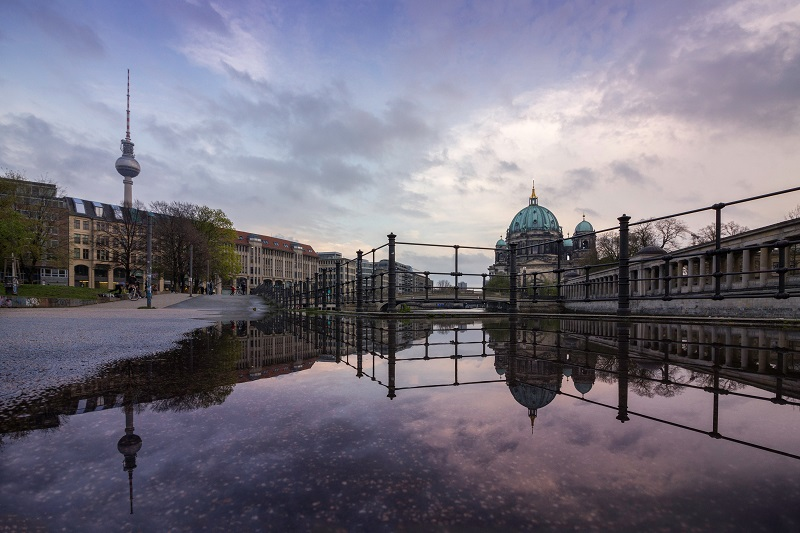
regenplassen bij de Berliner Dom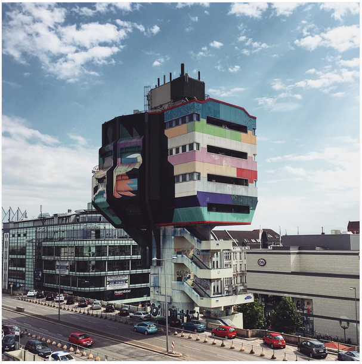
Bierpinsel, Steglitz. Zo genoemd omdat het gebouw eruitziet als een kwast en er bij de opening gratis bier verstrekt werd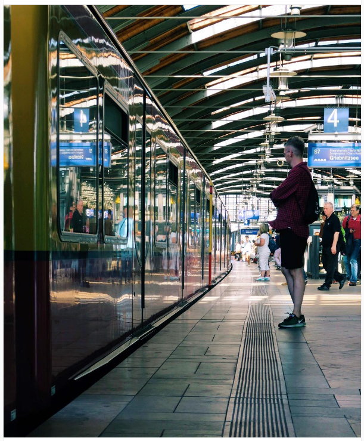
Station Hackeschermarkt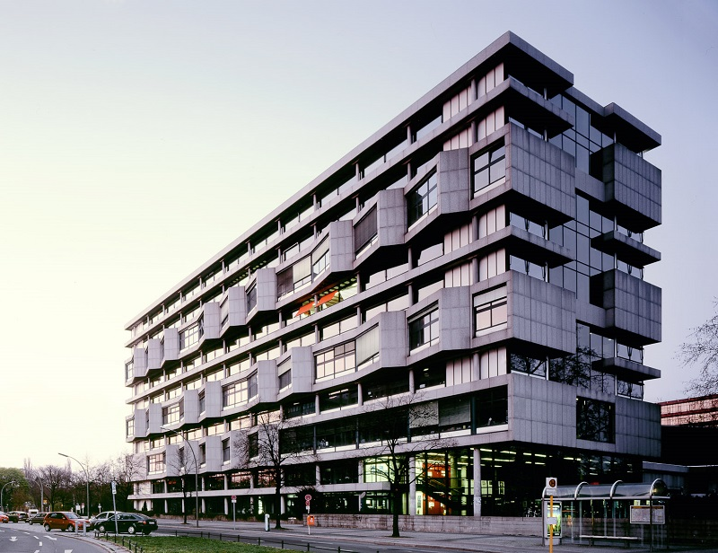
Technische Universiteit Berlijn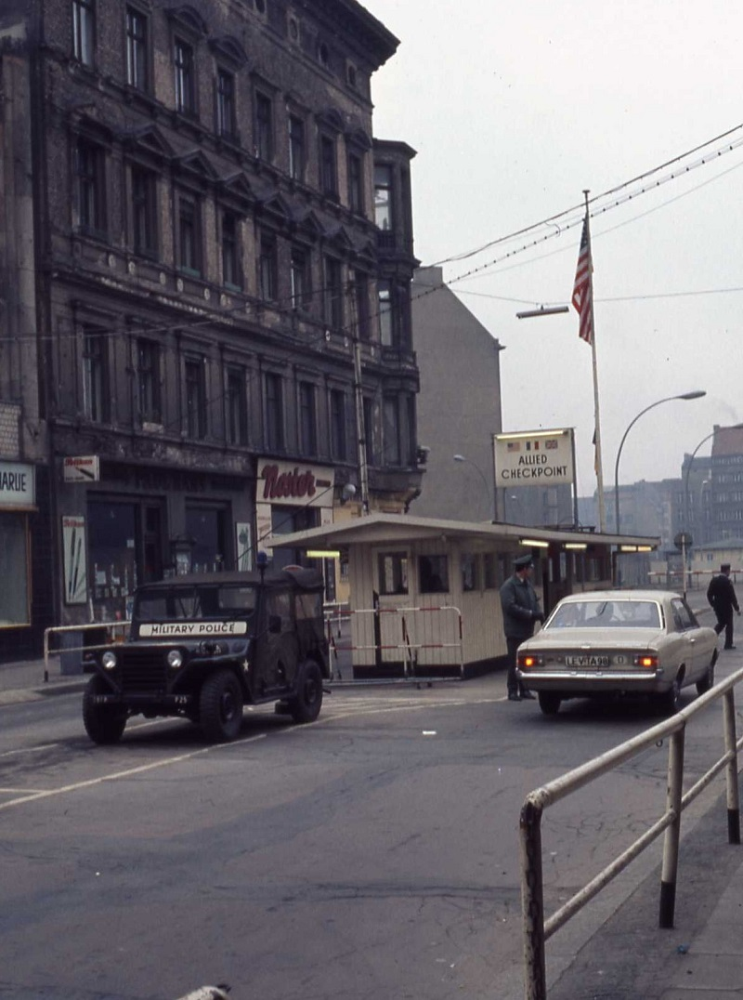
Checkpoint Charlie 1971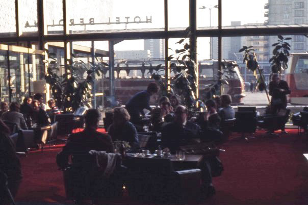
Hotel Berolina, aan de Karl Marx Allee, "aanbevolen" attractie wanneer je op bezoek was in Oost-Berlijn (1971). Dit om te laten zien welke luxe er in de DDR voorhanden was.